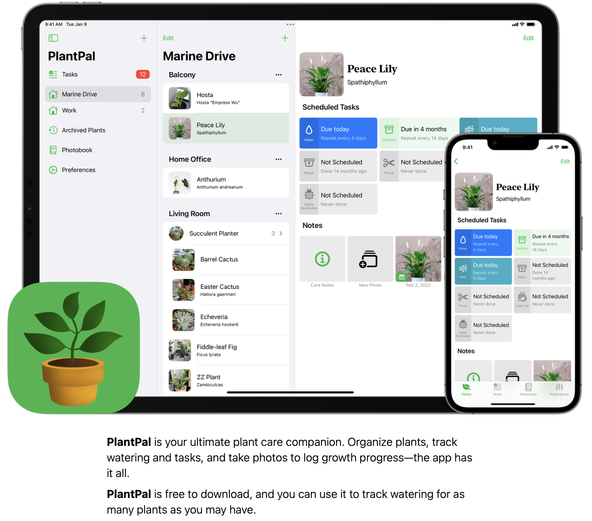

{ .img-fluid }
Welcome to the next generation of indoor plant care! PlantPal is designed to simplify your gardening routine while making sure your beloved houseplants receive exactly what they need to thrive. With a focus on ease-of-use and a friendly interface, PlantPal leverages IoT sensors and smart integrations to bring you a streamlined, stress-free plant care experience.
What Makes PlantPal Unique?
Real-Time Sensor Insights
Stay informed with a clear, concise dashboard that displays up-to-the-minute data on your plants’ soil moisture, light exposure, and temperature. No more guessing when to water or adjust the lighting—PlantPal tells you exactly what your plants need.
- Instant Updates: View live sensor readings so you’re always in tune with your plants’ needs.
- Easy-to-Understand Visuals: Friendly graphs and icons help you quickly assess plant health.
Smart Automation and Integration
Take the guesswork out of plant care. PlantPal connects seamlessly with your smart home devices, automating routine tasks so you can focus on enjoying your indoor garden.
- Automated Watering and Lighting: Set your preferences and let PlantPal manage the details.
- Customizable Schedules: Tailor automation to fit your lifestyle and your plants’ unique requirements.
Community at Your Fingertips
Join a growing network of plant enthusiasts who share tips, success stories, and creative ideas. Whether you’re a beginner or a seasoned green thumb, our community is here to support you.
- Interactive Forums: Ask questions, share advice, and learn from others in a welcoming environment.
- User Stories and Inspiration: Get inspired by how others are transforming their indoor spaces into lush, vibrant gardens.
User-Friendly Experience
We believe in making technology work for you. PlantPal’s interface is designed to be intuitive and accessible—whether you’re at home or on the go.
- Responsive Design: Enjoy a seamless experience on both desktop and mobile devices.
- Step-by-Step Guidance: From setup to daily management, our in-app tutorials make it simple to get started.
How Does It Work?
- Easy Setup: Launch the interactive setup wizard to connect your IoT sensors and configure your smart home devices in minutes.
- Monitor & Act: Check your PlantPal dashboard to see real-time updates and receive personalized care recommendations.
- Enjoy Your Garden: With automated routines and community support, you can relax knowing your plants are in great hands.
PlantPal isn’t just another tech gadget—it’s a complete solution for modern indoor gardening. Whether you’re nurturing a single succulent or an entire collection of houseplants, our platform is here to help you succeed with minimal hassle and maximum enjoyment.
Ready to transform your plant care routine? Learn more about PlantPal and get started today.
Happy Gardening!